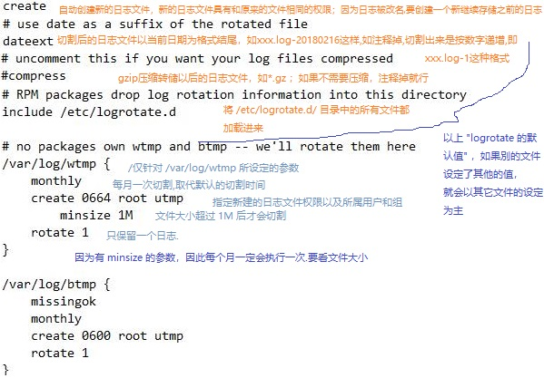
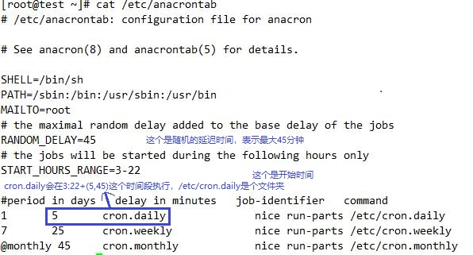

Logrotate
logrotate程序是一个日志文件管理工具。用来把旧的日志文件删除，并创建新的日志文件，称为日志转储或滚动。可以节省磁盘空间,可以根据日志文件的大小，也可以根据其天数来转储，这个过程一般通过 cron 程序来执行
logrotate工具对于防止因庞大的日志文件而耗尽存储空间是十分有用的。配置完毕后，进程是全自动的，可以长时间在不需要人为干预下运行
默认centos系统安装自带logrotate，安装方法如下
yum -y install logrotate crontabs
配置文件是/etc/logrotate.conf，通常不需要对它进行修改。
日志文件的轮循设置在独立的配置文件中，它（们）放在/etc/logrotate.d/目录下。
logrotate.conf才主要的配置文件
logrotate.d是一个目录，该目录里的所有文件都会被主动的读入/etc/logrotate.conf中执行。
另外，如果 /etc/logrotate.d/ 里面的文件中没有设定一些细节，则会以/etc/logrotate.conf这个文件的设定来作为默认值。
切割介绍
日志究竟轮换几次，这个是根据配置文件中的rotate参数来判定的
实际运行时，Logrotate会调用配置文件/etc/logrotate.conf。

Logrotate的备份策略（以两个备份来说明，即rotate 2，文件error.log）：
原始文件error.log，经过一次转储，会生成error.log.1
第二次转储，生成error.log.2
第三次转储，error.log.n命名为error.log.n+1，同时生成新的error.log.1，删除error.log.n+1文件。
转储可以通过强制执行来观察工作过程
logrotate -vf /etc/logrotate.d/nginx。
可以在/etc/logrotate.d目录里放置自定义好的配置文件，用来覆盖Logrotate的缺省值
logrotate 默认自动切割时间
日志轮转是系统自动完成的
默认的logrotate是一天运行一次,其脚本是/etc/cron.daily/logrotate
实际运行时，Logrotate会调用配置文件/etc/logrotate.conf

Logrotate是基于CRON运行的，所以这个时间是由CRON控制的，具体可以查询CRON的配置文件/etc/anacrontab（老版本的文件是/etc/crontab）

会发现logrotate自动切割日志文件的默认时间是凌晨3点多
取消自动切割
1.可以移走/etc/anacrontab
2.crontab进行自定义的定时轮转操作
10 22 * * * /usr/sbin/logrotate -f /etc/logrotate.d/nginx >/dev/null 2>&1
参数
主要参数如下 ,man logrotate
compress 通过gzip压缩转储以后的日志
nocompress 不压缩
copytruncate 用于还在打开中的日志文件，把当前日志备份并截断；是先拷贝再清空的方式，拷贝和清空之间有一个时间差，可能会丢失部分日志数据
nocopytruncate 备份日志文件但是不截断
create mode owner group 转储文件，使用指定的文件模式创建新的日志文件,如create 0744 nobody nobody
nocreate 不建立新的日志文件
delaycompress 和compress一起使用时，转储的日志文件到下一次转储时才压缩
nodelaycompress 覆盖 delaycompress 选项，转储同时压缩。
errors address 专储时的错误信息发送到指定的Email 地址
ifempty 即使是空文件也转储，这个是 logrotate 的缺省选项。
notifempty 如果是空文件的话，不转储
mail address 把转储的日志文件发送到指定的E-mail 地址
nomail 转储时不发送日志文件
olddir directory 转储后的日志文件放入指定的目录，必须和当前日志文件在同一个文件系统
noolddir 转储后的日志文件和当前日志文件放在同一个目录下
prerotate/endscript 在转储以前需要执行的命令可以放入这个对，这两个关键字必须单独成行
postrotate 在logrotate转储之后需要执行的指令，例如重新启动(kill -HUP)某个服务！必须独立成行
daily 指定转储周期为每天
weekly 指定转储周期为每周
monthly 指定转储周期为每月
missingok 在日志轮循期间，任何错误将被忽略，例如“文件无法找到”之类的错误
rotate count 指定日志文件删除之前转储的次数,一次将存储5个归档日志。对于第六个归档，时间最久的归档将被删除,0指没有备份，5指保留5个备份
dateformat .%s 配合dateext使用，紧跟在下一行出现，定义文件切割后的文件名，必须配合dateext使用，只支持 %Y %m %d %s 这四个参数
size(或minsize) log-size 当日志文件到达指定的大小时才转储，log-size能指定bytes(缺省)及KB (sizek)或MB(sizem).
当日志文件 >= log-size的时候就转储。以下为合法格式：（其他格式的单位大小写没有试过）
size = 5 或 size 5 （>= 5 个字节就转储）
size = 100k 或 size 100k
size = 100M 或 size 100M
测试logrotate如何管理日志
这里我们将创建一个10MB的日志文件/var/log/log-file。我们将展示怎样使用logrotate来管理该日志文件。
创建一个日志文件，然后在其中填入一个10MB的随机比特流数据文件。
touch /var/log/log-file
head -c 10M < /dev/urandom > /var/log/log-file
由于现在日志文件已经准备好，我们将配置logrotate来轮循该日志文件。让我们为该文件创建一个配置文件。
vim /etc/logrotate.d/log-file
/var/log/log-file {
monthly
rotate 5
compress
delaycompress
missingok
notifempty
create 644 root root
postrotate
/usr/bin/killall -HUP rsyslogd
endscript
}
上面的模板是通用的，而配置参数则根据你的需求进行调整，不是所有的参数都是必要的
2.手动运行logrotate
logrotate可以在任何时候从命令行手动调用。要调用为/etc/lograte.d/下配置的所有日志调用logrotate
logrotate /etc/logrotate.conf
要为某个特定的配置调用logrotate,执行一次切割任务测试
ll /var/log/log-file
-rw-r--r-- 1 root root 0 Jan 6 19:05 /var/log/log-file
logrotate -vf /etc/logrotate.d/log-file
ll /var/log/log-file*
-rw-r--r-- 1 root root 0 Jan 6 19:05 /var/log/log-file
-rw-r--r-- 1 root root 10485760 Jan 6 19:05 /var/log/log-file.1
即使轮循条件没有满足，我们也可以通过使用‘-f’选项来强制logrotate轮循日志文件，‘-v’参数提供了详细的输出。
Logrotate的记录日志
logrotate自身的日志通常存放于/var/lib/logrotate/status目录。
如果处于排障目的，我们想要logrotate记录到任何指定的文件，我们可以指定像下面这样从命令行指定。
logrotate -vf -s /var/log/logrotate-status /etc/logrotate.d/log-file
logrotate生产应用
1.nginx设置日志切割,防止访问日志文件过大
1 | cat /etc/logrotate.d/nginx |
2.系统日志切割
1 | cat /etc/logrotate.d/syslog |
logrotate无法自动轮转解决
1.检查日志切割的配置文件是否有问题
cat /etc/logrotate.d/xx 需要分割的文件
cat /etc/cron.daily/logrotate
2.查看cron的日志
cat /var/log/cron
3.查看/etc/cron.daily/logrotate（这是logrotate自动轮转的脚本）的内容
4.应该有可能是logroate认为nginx日志太小，不进行轮询。
故需要强制轮询，即在/etc/cron.daily/logrotate脚本中将 -t 参数替换成 -f 参数
5.重启下cron服务